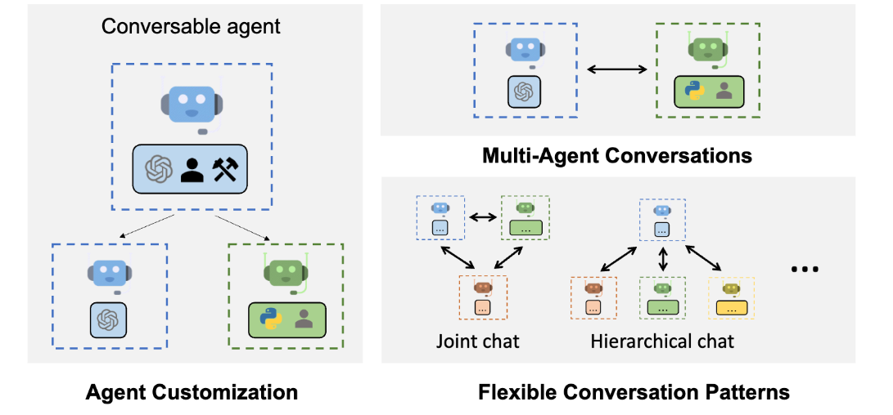

AutoGen is a framework designed to automate the process of creating and orchestrating multiple AI agents that collaborate to complete complex tasks. It leverages large language models (LLMs), like those used in natural language processing, and allows different agents to communicate, plan, and problem-solve together. Instead of relying on a single AI to perform an entire task, AutoGen sets up an ecosystem where multiple AI agents specialize in different aspects of the problem, working interactively to produce more accurate and complex outcomes.
AutoGen has the potential to revolutionize AI because it dramatically extends the capabilities of individual AI models by allowing them to work collaboratively and autonomously. This approach opens up possibilities for AI systems to tackle multifaceted challenges that require specialized knowledge across domains, enhancing efficiency and performance. Additionally, AutoGen can reduce the need for manual intervention, allowing AI agents to autonomously refine their workflows, improve decision-making, and generate solutions that were previously too complex for a single AI model to handle. This collaborative framework could be applied in various industries, including healthcare, finance, and logistics, paving the way for more sophisticated, self-sufficient AI ecosystems.
Here’s a README.md file for your Autogen project that introduces using autogen to create AI agents within a Jupyter Notebook:
Welcome to the Autogen repository! This project provides a Jupyter Notebook that introduces the process of using Autogen to create and orchestrate multiple AI agents. These agents can work together autonomously to complete complex tasks using large language models (LLMs) like GPT, making the automation of workflows and decision-making processes easier and more efficient.
Autogen is a framework designed to allow the creation and orchestration of multiple AI agents that work collaboratively on complex tasks. These agents can be specialized for different sub-tasks and communicate with each other, leveraging the power of large language models (LLMs) such as GPT, GPT-3, or other cutting-edge models.
This project provides an introductory Jupyter Notebook that demonstrates how to build and use AI agents via the Autogen framework, enabling a modular and efficient approach to handling AI workflows.
To get started, clone the repository and install the required dependencies.
bash
git clone https://github.com/yourusername/autogen.git
cd autogen
pip:bash
pip install -r requirements.txt
Navigate to the project folder and start Jupyter Notebook:
bash
jupyter notebook
Open the Autogen Notebook:
In Jupyter, open the file named autogen_intro.ipynb. This notebook will guide you through setting up and interacting with AI agents using the Autogen framework.
Follow the Notebook Instructions:
The notebook is structured into sections that gradually introduce the concept of AI agents and demonstrate how to use Autogen to:
Autogen allows you to configure and automate AI agents that communicate with each other to break down and solve complex tasks. These agents can handle various activities such as:
The agents can be tailored and extended to work on various domains, allowing you to build modular AI systems.
We welcome contributions to improve the Autogen project. To contribute:
git checkout -b feature-branch).git commit -m 'Add new feature').git push origin feature-branch).This README.md provides a clear overview of the project, instructions for getting started, and a breakdown of the notebook’s contents. It ensures users can quickly set up the environment and understand the purpose of Autogen within the Jupyter Notebook context.
The goal of this solution is to Jump Start your development and have you up and running in 30 minutes.
To get started with the Autogen solution repository, follow these steps: 1. Clone the repository to your local machine. 2. Install the required dependencies listed at the top of the notebook. 3. Explore the example code provided in the repository and experiment. 4. Run the notebook and make it your own - EASY !
These features are designed to provide everything you need for Autogen